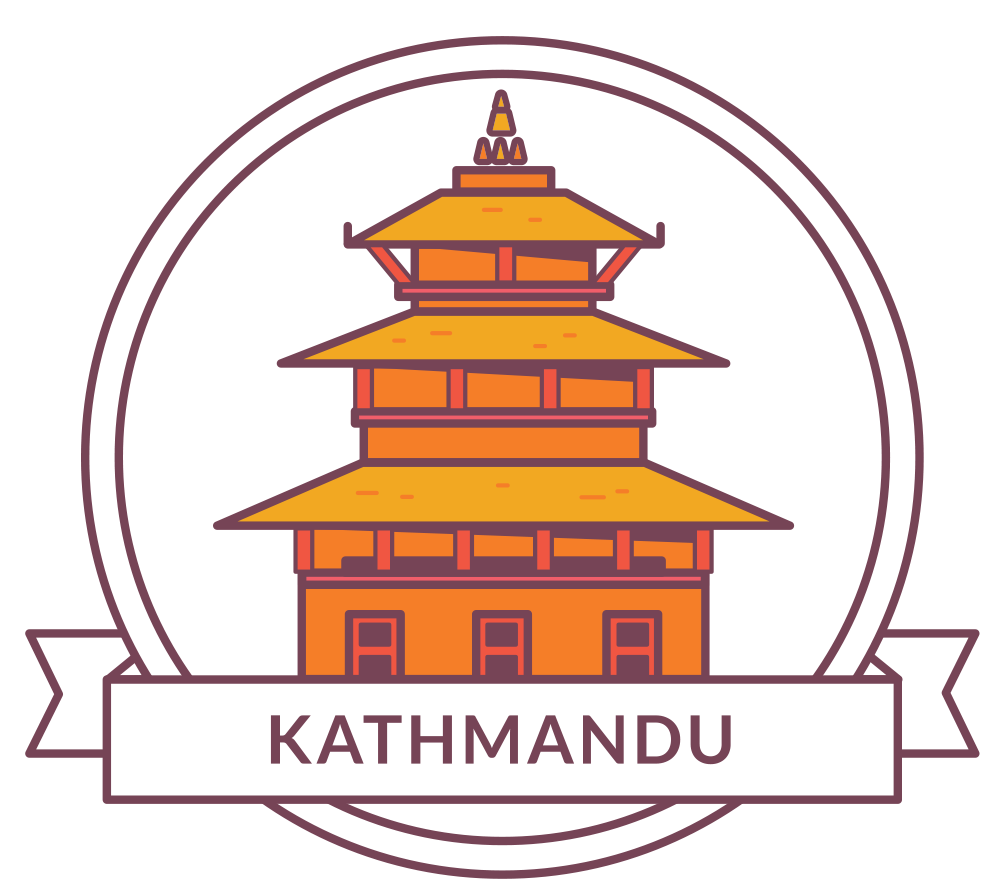
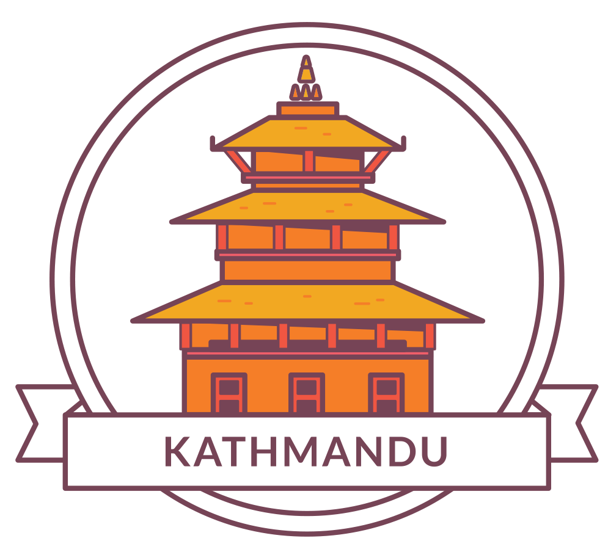

Bhaktapur Durbar Square
Bhaktapur Durbar Square the city is also known, is a museum of medieval art and architecture with many examples of sculpture, woodcarving and colossal pagoda temples consecrated to different gods and goddesses which is 15 km far from Kathmandu. It is a conglomeration of pagoda and shikhara-style temples grouped around a fifty-five window palace of brick and wood. The square is one of the most charming architectural showpieces of the Valley as it highlights the ancient arts of Nepal. The golden effigies of kings perched on the top of stone monoliths, the guardian deities looking out from their sanctuaries, the wood carvings in every place-struts, lintels, uprights, tympanums, gateways and windows-all seem to form a well-orchestrated symphony. Pottery and weaving are its major traditional industries.
The Major attraction of Bhaktapur Darbar Square
55 Window Palace
This is the main architectural structure dominating the entire Durbar Square. This magnificent monument was built in 15th century AD. Seated on a huge column top in a position of prayer to God is King Bhupatindra Malla.
Golden Gate
This is the main entrance to the palace. The craftsman who worked on this wonderful gate must be from Heaven. It is an eternal beauty in itself.
Lion's Gate
This gate has two beautiful stone statues of Hindu deities installed on its either side. It is said that the hands of the artisans who produced this were cut off immediately after he gave a finishing touch to them. A jealous Bhadgaon King did this so that the artisan could not produce any more of such arts.
Mini Pashupati Temple
Some people call it a royal dream temple. Folklore says - once a Bhadgaon King who was a great devotee to Lord Pashupati had a dream in which Lord told the king to build a temple for Pashupati right in front of this palace.
Vatsala Temple
This temple dedicated to a mother goddess is full of intricate works on stone. This temple is known for its dog-barking bell. This bell is believed to produce a death knell when it is rung up.
Nyatapola Temple
This is the most famous pagoda of Nepal. Nyatapola in Newari language means fie tires - the symbolic of five basic elements. This is the highest pagoda of Nepal ever built with such architectural perfection and artistic beauty. This temple is dedicated to Sidhilaxmi, the tantric goddess of supreme power and success.
Bhairava Nath Temple
This temple is dedicated to Bhairava the God of terror and death,